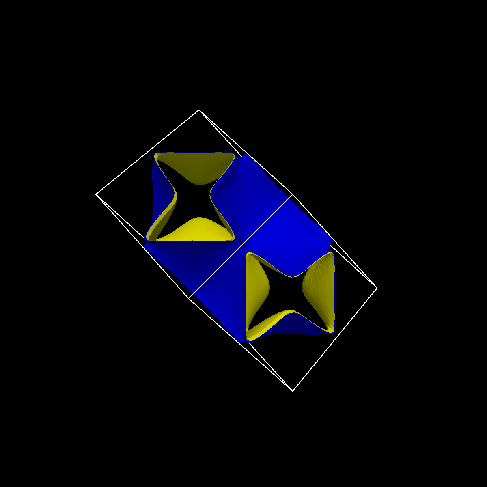

NOMAD HTC Vive for time-dependant data, 64 bit Installer, 20 MB
For NOMAD Encyclopaedia integration, http is supported directly. Other protocols (https, ftp) use an external wget program. Wget.exe should be in the PATH to enable https and ftp support. Download it here.

CO2-CaO, relative electron densities, 137 MB
CO2-CaO, full electron densities, 1.8 GB

Ag Fermi surface, 374 KB
Atomistic viewer: Glucose (from this example)
Glucose.ncfg
Glucose.xyz
-Download the installer, and install.
-Download the rar file, and decompress.
-Double click on the .ncfg file and assign to the installed program NOMADViveT.exe
Format of the NOMADViveT configuration file.
---------------------------------------------------------------------------
Android Installer (apk), Relative densities, 2 MB
Android Installer (apk), Full densities, 200 timesteps (1,3,...), 2 MB
Install instructions:
-Allow unsigned software in oculus
(see here).
-Install desired apk(s)
-Relative densities: download CO2-CaO-Rel.rar (same file as above) and decompress content in sdcard/Oculus. Rename the folder data to NOMAD and inside that,
the to CO2CaOrel to CO2-CaO-rel.
-Full densities: download CO2-CaO.rar (same file as above) and
decompress content in sdcard/Oculus.
Rename the folder data to NOMAD and inside that,
the to CO2-CaO-B to CO2-CaO (if the NOMAD folder already exists, you should just move
CO2-CaO-B inside the NOMAD folder before renaming).
-You may remove the .ncfg files, they are unused.
-The procedure will be simplified in the next version!
Control:
-Swipe forward to fly in the direction of gaze
-Swipe backwards to stop the movement
-Swipe up/down to go forward/backward in time
-Press back to show isosurfaces one by one (same caveat as above).